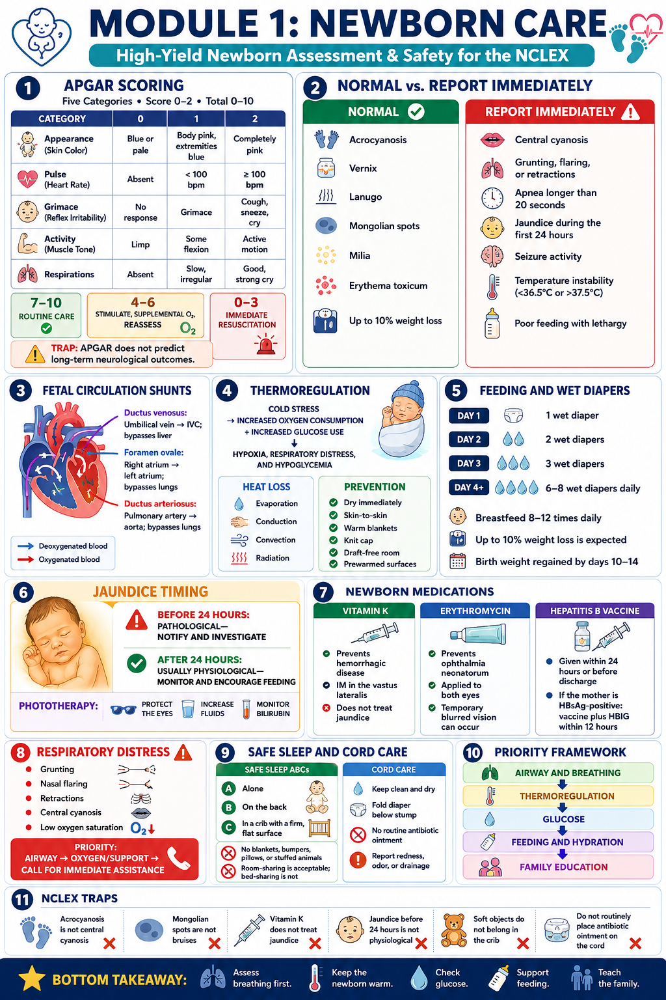

Module Overview
What this module covers and why it matters
Newborn care appears on every NCLEX exam. Whether you're testing pediatrics, OB, or pharmacology, the newborn is always nearby. This module builds your foundation in neonatal assessment so you can confidently identify what's normal, what needs monitoring, and what requires immediate action.
The NCLEX loves testing the distinction between physiologic (normal) findings and pathologic (report immediately) findings. Mastering this distinction in the newborn is your highest-yield study move for this module.
Learning Objectives
By the end of this module, you will be able to:
The Big Picture
How to frame this content before you dive in
Normal vs. abnormal findings · When to notify the provider · Priority action in respiratory distress · Teaching parents at discharge
Newborns are transitioning from fetal to independent life. Most findings that look scary are normal. A few that look subtle are emergencies.
Blue hands and feet = normal (acrocyanosis). Blue lips and tongue = emergency. Students mix these up constantly.
Respiratory → Thermoregulation → Glucose → Feeding → Family teaching. Always in this order.
💡 Madison's Rule: When in doubt, ask — is the baby blue in the middle (emergency) or just at the edges (normal)? Is the jaundice before or after 24 hours (before = always pathological)? These two questions alone will carry you through most newborn NCLEX questions.
High-Yield Graphic
Study this before reading the deep dive lessons

📋 Upload module1-infographic.png to this folder to display the infographic here.Study this graphic for 2–3 minutes before moving on. Look for patterns, not just facts.
Deep Dive Lessons
Select a lesson to expand
APGAR is scored at 1 minute and 5 minutes of life. It does not predict long-term neurological outcome — that's an NCLEX trap.
| Category | 0 | 1 | 2 |
|---|---|---|---|
| Appearance | Blue all over | Blue extremities (pink body) | Pink all over |
| Pulse | Absent | <100 bpm | ≥100 bpm |
| Grimace | No response | Grimace only | Cry/cough/sneeze |
| Activity | Limp/flaccid | Some flexion | Active motion |
| Respirations | Absent | Slow/irregular | Strong cry |
| Finding | Normal or Not? | Key Point |
|---|---|---|
| Acrocyanosis (blue hands/feet) | Normal | Peripheral, not central. Goes away in days. |
| Central cyanosis (blue lips/tongue) | Report immediately | Cardiac or respiratory emergency |
| Vernix caseosa | Normal | Protective coating, especially in skin folds |
| Lanugo | Normal | Fine hair on back/shoulders, especially preterm |
| Mongolian spots | Normal | Blue-gray spots on lower back — NOT bruising |
| Milia | Normal | Tiny white dots on nose — clogged sebaceous glands |
| Erythema toxicum | Normal | Blotchy rash — appears 1–3 days, resolves quickly |
| Grunting, flaring, retractions | Report immediately | Signs of respiratory distress |
| Apnea >20 seconds | Report immediately | Especially with bradycardia or color change |
| Jaundice in first 24 hours | Always pathological | May indicate hemolytic disease |
| Jaundice after 24 hours | Physiologic | Peaks days 3–5, resolves by 2 weeks |
| Weight loss up to 10% | Normal | Regained by day 10–14 |
Three fetal structures close after birth. Know each one's job and what happens when they fail to close.
| Structure | Connects | Purpose | What closes it |
|---|---|---|---|
| Ductus Venosus | Umbilical vein → IVC | Bypasses liver | First breath / cord clamping |
| Foramen Ovale | Right atrium → Left atrium | Bypasses lungs | Increased left atrial pressure after birth |
| Ductus Arteriosus | Pulmonary artery → Aorta | Bypasses lungs | Increased O₂ tension after first breath |
💡 If ductus arteriosus stays open (PDA), blood shunts left → right, causing pulmonary overcirculation. Treated with indomethacin (closes it) or surgery.
Newborns cannot shiver. They use nonshivering thermogenesis (burning brown adipose tissue) to generate heat — which consumes enormous amounts of oxygen and glucose.
| Heat Loss Type | Example | Prevention |
|---|---|---|
| Evaporation | Wet baby after delivery | Dry immediately with warm blankets |
| Conduction | Cold scale or surface | Pre-warm all surfaces |
| Convection | Drafts, air conditioning | Keep room warm, no drafts |
| Radiation | Cold walls/windows nearby | Keep baby away from cold surfaces |
Interventions: dry + swaddle, skin-to-skin, knit cap, radiant warmer, pre-warm blankets.
Wet diapers are your best daily indicator of adequate intake in breastfed newborns.
| Day of Life | Expected Wet Diapers |
|---|---|
| Day 1 | 1 wet diaper |
| Day 2 | 2 wet diapers |
| Day 3 | 3 wet diapers |
| Day 4+ | 6–8 wet diapers per day |
Feeding frequency: Every 2–3 hours, 8–12 times/day for breastfed newborns.
Hypoglycemia risk: LGA infants, infants of diabetic mothers, preterm, SGA. Check glucose in first hour.
Appears within the first 24 hours of life. Always investigate — may indicate ABO/Rh incompatibility, G6PD deficiency, or sepsis. Bilirubin rises rapidly (>5 mg/dL/day).
Appears after 24 hours, typically peaks days 3–5, resolves by 2 weeks. Caused by normal RBC breakdown and immature liver. Encourage frequent feeding to promote excretion.
Treatment: Phototherapy (blue light breaks down bilirubin in skin). Eyes must be protected. Increase fluid intake. Monitor skin color head-to-toe (jaundice progresses cephalocaudally — head first, feet last).
Memory Tricks
Mnemonics and anchors built to stick
NCLEX Pearls
Always-true statements you can take to the exam
NCLEX Traps
Where students get it wrong — and why
Clinical Connections
How this shows up at the bedside
- Central cyanosis (lips/tongue blue)
- Grunting, flaring, retractions
- Apnea >20 seconds
- Jaundice within first 24 hours
- Glucose <45 mg/dL despite feeding
- Temperature instability
- Seizure activity
- Poor feeding + lethargy
- Safe sleep (back, alone, firm surface)
- Cord care (keep dry, fold diaper below)
- Wet diaper count by day of life
- Feeding frequency (8–12x/day)
- When to call pediatrician
- Car seat safety
- Follow-up appointment in 2–3 days
- Respiratory distress → Airway, O₂, call for help
- Hypoglycemia → Feed first, then recheck
- Hypothermia → Dry, swaddle, skin-to-skin
- Jaundice <24hrs → Notify, draw bilirubin
- LGA / Infant of diabetic mother → hypoglycemia
- Preterm → hypothermia, RDS, NEC
- SGA → hypoglycemia, polycythemia
- Rh- mom + Rh+ baby → hemolytic disease
- ABO incompatibility → pathologic jaundice
Priority Framework
How to sequence your thinking on NCLEX questions
Medication Focus
Key newborn medications — know the purpose, route, and traps
Prevents hemorrhagic disease of the newborn (HDN) — newborns are born with sterile gut, no gut flora to produce Vitamin K
IM injection, vastus lateralis · Given within 1–6 hours of birth
0.5–1 mg IM (single dose)
Does NOT prevent jaundice · Does NOT treat eye infections · Does NOT require consent in most states
Prevents ophthalmia neonatorum — eye infection from maternal gonorrhea or chlamydia exposure during delivery
Topical eye ointment · Given within 1–2 hours of birth · Both eyes
Temporary blurred vision (chemical conjunctivitis) — normal, resolves in 24–48 hours
Baby's vision temporarily blurry — does not affect bonding long-term; brief delay in eye-to-eye contact is expected
First dose given within 24 hours of birth (or before discharge for healthy newborns)
IM · Vastus lateralis · 0.5 mL
3-dose series: Birth, 1–2 months, 6 months
Give HepB vaccine AND HepB Immune Globulin (HBIG) within 12 hours of birth
Practice Questions
25 questions · All types · Rationale after each answer
Case Studies
NGN-style clinical scenarios — think through each before revealing the answer
A 2-hour-old newborn born at 38 weeks gestation develops grunting on expiration, nasal flaring, and intercostal retractions. SpO₂ is 86% on room air. The infant has central cyanosis of the lips and tongue. The mother received one dose of betamethasone 12 hours prior to delivery.
SpO₂ 86% with central cyanosis is the most immediately life-threatening finding. This indicates severe hypoxemia. Airway and oxygenation are always the first priority.
Signs of RDS: nasal flaring, grunting on expiration, intercostal retractions, central cyanosis, low SpO₂. Normal temperature and HR (if normal) are not RDS signs. Peripheral cyanosis (acrocyanosis) alone would not count.
Using the ABC framework: Airway → ensure patent airway and call for immediate respiratory assistance. Documentation and glucose assessment come after stabilizing the airway.
An 18-hour-old newborn is noted to have yellowing of the skin from face to upper abdomen. The mother is blood type O+ and the infant is A+. The infant has had only 1 wet diaper since birth and is latching poorly. Bilirubin is currently 9 mg/dL.
Jaundice appearing within the first 24 hours of life is ALWAYS pathological. This is the critical NCLEX distinction. Physiologic jaundice does not appear until after 24 hours.
O+ mother with A+ infant = ABO incompatibility. Maternal anti-A antibodies cross the placenta and destroy fetal RBCs, causing hemolysis and elevated bilirubin.
Actions: Notify provider immediately, monitor bilirubin levels per order, encourage frequent feeding (helps eliminate bilirubin via stool), assess for hemolysis signs (pallor, lethargy), prepare for phototherapy. Do NOT reassure parents this is normal — it is pathological.
Remediation Worksheet
Fill in the blanks — print or complete digitally
Quick Quiz
10 questions · Instant feedback · No scrolling
Module Checklist
Check off each item when you feel confident — saves automatically